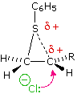
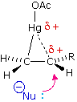
Sulfenyl chloride additions are initiated by the attack of an electrophilic sulfur species on the pi-electrons of the double bond. The resulting cationic intermediate may be stabilized by the non-bonding valence shell electrons on the sulfur in exactly the same way the halogens exerted their influence. Indeed, a cyclic sulfonium ion intermediate analogous to the bromonium ion is believed to best represent this intermediate (see drawing on the left). Two advantages of the oxymercuration method of adding water to a double bond are its high anti-stereoselectivity and the lack of rearrangement in sensitive cases. These characteristics are attributed to a mercurinium ion intermediate, analogous to the bromonium ion discussed above. In this case it must be d-orbital electrons that are involved in bonding to carbon. A drawing of this intermediate is shown on the right.
Hydroboration Stereoselectivity The hydroboration reaction is among the few simple addition reactions that proceed cleanly in a syn fashion. As noted above, this is a single-step reaction. Since the bonding of the double bond carbons to boron and hydrogen is concerted, it follows that the geometry of this addition must be syn. Furthermore, rearrangements are unlikely inasmuch as a discrete carbocation intermediate is never formed. These features are illustrated for the hydroboration of α-pinene in the following equation. Since the hydroboration procedure is most commonly used to hydrate alkenes in an anti-Markovnikov fashion, we also need to know the stereoselectivity of the second oxidation reaction, which substitutes a hydroxyl group for the boron atom. Independent study has shown this reaction takes place with retention of configuration so the overall addition of water is also syn.
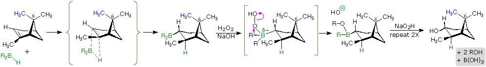
The hydroboration of α-pinene also provides a nice example of steric hindrance control in a chemical reaction. In the less complex alkenes used in earlier examples the plane of the double bond was often a plane of symmetry, and addition reagents could approach with equal ease from either side. In this case, one of the methyl groups bonded to C-6 (colored blue in the equation) covers one face of the double bond, blocking any approach from that side. All reagents that add to this double bond must therefore approach from the side opposite this methyl.
Addition of hydrogen to a carbon-carbon double bond is called hydrogenation. The overall effect of such an addition is the reductive removal of the double bond functional group. Regioselectivity is not an issue, since the same group (a hydrogen atom) is bonded to each of the double bond carbons. The simplest source of two hydrogen atoms is molecular hydrogen (H2), but mixing alkenes with hydrogen does not result in any discernible reaction. Although the overall hydrogenation reaction is exothermic, a high activation energy prevents it from taking place under normal conditions. This restriction may be circumvented by the use of a catalyst, as shown in the following diagram.
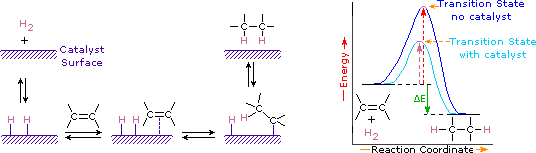
Catalysts are substances that changes the rate (velocity) of a chemical reaction without being consumed or appearing as part of the product. Catalysts act by lowering the activation energy of reactions, but they do not change the relative potential energy of the reactants and products. Finely divided metals, such as platinum, palladium and nickel, are among the most widely used hydrogenation catalysts. Catalytic hydrogenation takes place in at least two stages, as depicted in the diagram. First, the alkene must be adsorbed on the surface of the catalyst along with some of the hydrogen. Next, two hydrogens shift from the metal surface to the carbons of the double bond, and the resulting saturated hydrocarbon, which is more weakly adsorbed, leaves the catalyst surface. The exact nature and timing of the last events is not well understood. As shown in the energy diagram, the hydrogenation of alkenes is exothermic, and heat is released corresponding to the ΔE (colored green) in the diagram. This heat of reaction can be used to evaluate the thermodynamic stability of alkenes having different numbers of alkyl substituents on the double bond. For example, the following table lists the heats of hydrogenation for three C5H10 alkenes which give the same alkane product (2-methylbutane). Since a large heat of reaction indicates a high energy reactant, these heats are inversely proportional to the stabilities of the alkene isomers. To a rough approximation, we see that each alkyl substituent on a double bond stabilizes this functional group by a bit more than 1 kcal/mole.
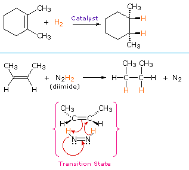
From the mechanism shown here we would expect the addition of hydrogen to occur with syn-stereoselectivity. This is often true, but the hydrogenation catalysts may also cause isomerization of the double bond prior to hydrogen addition, in which case stereoselectivity may be uncertain. The formation of transition metal complexes with alkenes has been convincingly demonstrated by the isolation of stable platinum complexes such as Zeise's salt, K[PtCl3(C2H4)].H2O, and ethylenebis(triphenylphosphine)platinum, [(C6H5)3P]2Pt(H2C=CH2). In the latter, platinum is three-coordinate and zero-valent, whereas Zeise's salt is a derivative of platinum(II). A model of Zeise's salt and a discussion of the unusual bonding in such complexes may be viewed by clicking here. Similar complexes have been reported for nickel and palladium, metals which also function as catalysts for alkene hydrogenation.
A non-catalytic procedure for the syn-addition of hydrogen makes use of the unstable compound diimide, N2H2. This reagent must be freshly generated in the reaction system, usually by oxidation of hydrazine, and the strongly exothermic reaction is favored by the elimination of nitrogen gas (a very stable compound). Diimide may exist as cis-trans isomers; only the cis-isomer serves as a reducing agent. Examples of alkene reductions by both procedures are shown on the right.
Dihydroxylated products (glycols) are obtained by reaction with aqueous potassium permanganate (pH > 8) or osmium tetroxide in pyridine solution. Both reactions appear to proceed by the same mechanism (shown below); the metallocyclic intermediate may be isolated in the osmium reaction. In basic solution the purple permanganate anion is reduced to the green manganate ion, providing a nice color test for the double bond functional group. From the mechanism shown here we would expect syn-stereoselectivity in the bonding to oxygen, and regioselectivity is not an issue. When viewed in context with the previously discussed addition reactions, the hydroxylation reaction might seem implausible. Permanganate and osmium tetroxide have similar configurations, in which the metal atom occupies the center of a tetrahedral grouping of negatively charged oxygen atoms. How, then, would such a species interact with the nucleophilic pi-electrons of a double bond? A possible explanation is that an empty d-orbital of the electrophilic metal atom extends well beyond the surrounding oxygen atoms and initiates electron transfer from the double bond to the metal, in much the same fashion noted above for platinum. Back-bonding of the nucleophilic oxygens to the antibonding π*-orbital completes this interaction. The result is formation of a metallocyclic intermediate, as shown below.
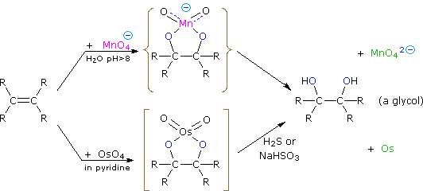
Some oxidation reactions of alkenes give cyclic ethers in which both carbons of a double bond become bonded to the same oxygen atom. These products are called epoxides or oxiranes. An important method for preparing epoxides is by reaction with peracids, RCO3H. The oxygen-oxygen bond of such peroxide derivatives is not only weak (ca. 35 kcal/mole), but in this case is polarized so that the acyloxy group is negative and the hydroxyl group is positive (recall that the acidity of water is about ten powers of ten weaker than that of a carboxylic acid). If we assume electrophilic character for the OH moiety, the following equation may be written.
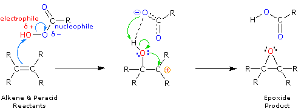
It is unlikely that a dipolar intermediate, as shown above, is actually formed. The epoxidation reaction is believed to occur in a single step with a transition state incorporating all of the bonding events shown in the equation. Consequently, epoxidations by peracids always have syn-stereoselectivity, and seldom give structural rearrangement. You may see the transition state by clicking the Change Equation button. Presumably the electron shifts indicated by the blue arrows induce a charge separation that is immediately neutralized by the green arrow electron shifts.
The previous few reactions have been classified as reductions or oxidations, depending on the change in oxidation state of the functional carbons. It is important to remember that whenever an atom or group is reduced, some other atom or group is oxidized, and a balanced equation must balance the electron gain in the reduced species with the electron loss in the oxidized moiety, as well as numbers and kinds of atoms. Starting from an alkene (drawn in the box), the following diagram shows a hydrogenation reaction on the left (the catalyst is not shown) and an epoxidation reaction on the right. Examine these reactions, and for each identify which atoms are reduced and which are oxidized.
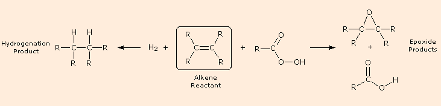
Epoxides may be cleaved by aqueous acid to give glycols that are often diastereomeric with those prepared by the syn-hydroxylation reaction described above. Proton transfer from the acid catalyst generates the conjugate acid of the epoxide, which is attacked by nucleophiles such as water in the same way that the cyclic bromonium ion described above undergoes reaction. The result is anti-hydroxylation of the double bond, in contrast to the syn-stereoselectivity of the earlier method. In the following equation this procedure is illustrated for a cis-disubstituted epoxide, which, of course, could be prepared from the corresponding cis-alkene. This hydration of an epoxide does not change the oxidation state of any atoms or groups.
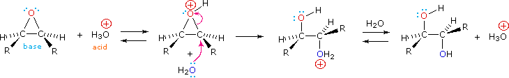
OzonolysisIn determining the structural formula of an alkene, it is often necessary to find the location of the double bond within a given carbon framework. One way of accomplishing this would be to selectively break the double bond and mark the carbon atoms that originally formed that bond. For example, there are three isomeric alkenes that all give 2-methylbutane on catalytic hydrogenation. These are 2-methyl-2-butene (compound A), 3-methyl-1-butene (compound B) and 2-methyl-1-butene (compound C), shown in the following diagram. If the double bond is cleaved and the fragments marked at the cleavage sites, the location of the double bond is clearly determined for each case. A reaction that accomplishes this useful transformation is known. It is called ozonolysis, and its application to each of these examples may be seen by clicking the "Show Reaction" button.
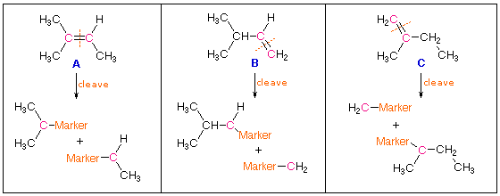
Ozone, O3, is an allotrope of oxygen that adds rapidly to carbon-carbon double bonds. Since the overall change in ozonolysis is more complex than a simple addition reaction, its mechanism has been extensively studied. Reactive intermediates called ozonides have been isolated from the interaction of ozone with alkenes, and these unstable compounds may be converted to stable products by either a reductive workup (Zn dust in water or alcohol) or an oxidative workup (hydrogen peroxide). The results of an oxidative workup may be seen by clicking the "Show Reaction" button a second time. Continued clicking of this button repeats the cycle. The chief difference in these conditions is that reductive workup gives an aldehyde product when hydrogen is present on a double bond carbon atom, whereas oxidative workup gives a carboxylic acid or carbon dioxide in such cases. The following equations illustrate ozonide formation, a process that is believed to involve initial syn-addition of ozone, followed by rearrangement of the extremely unstable molozonide addition product. They also show the decomposition of the final ozonide to carbonyl products by either a reductive or oxidative workup.
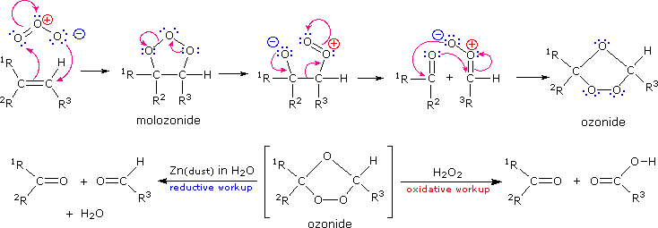
From this analysis and the examples given here, you should be able to deduce structural formulas for the alkenes that give the following ozonolysis products.
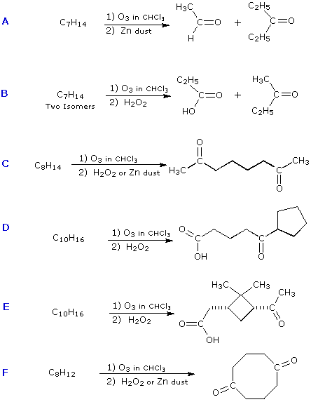
The relatively stable ozonide, arterolane, is a component of a new antimalerial drug, Synriam. Combined with piperaquine, it provides effective treatment of Plasmodium falciparum, the most lethal form of malaria. The ozonide ring is similar to the bridged trioxide unit found in the Chinese herb artemisinin and its derivative artemether, which, combined with lumafantrine have also been used as the antimalerial drug, Coartem. Traditional medications such as chloroquine are effective in only 50 percent of patients where the parasite is drug-resistant.
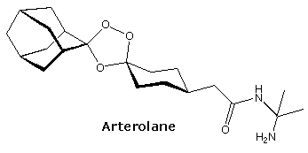
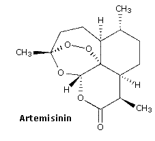
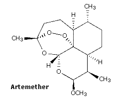
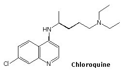
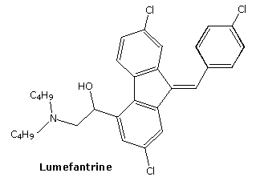
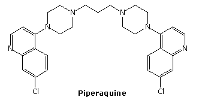
Glycol Cleavage The vicinal glycols prepared by alkene hydroxylation (reaction with osmium tetroxide or permanganate) are cleaved to aldehydes and ketones in high yield by the action of lead tetraacetate (Pb(OAc)4) or periodic acid (HIO4). This oxidative cleavage of a carbon-carbon single bond provides a two-step, high-yield alternative to ozonolysis, that is often preferred for small scale work involving precious compounds. A general equation for these oxidations is shown below. As a rule, cis-glycols react more rapidly than trans-glycols, and there is evidence for the intermediacy of heterocyclic intermediates (as shown), although their formation is not necessary for reaction to occur.
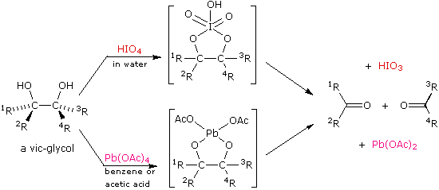
The following problems review many aspects of alkene chemistry. The first question allows you to choose the form of the question (i.e. starting alkene, reagent or product). The second question requires you to draw the product of a reaction selected from 54 possible combinations of alkene and reagent. The third question asks you to choose reagents which will convert propene into a designated product (more than one step may be needed). The fourth question is another reagent selection problem (the ketone can be ignored), and the fifth is similar but also requires selecting the starting alkene for the synthesis. The next two problems concern the ozonolysis cleavage of double bonds. The eighth question concerns four reactions in which stereospecific addition reactions have taken place. Finally, a random quiz may be examined.
This page is the property of The Edvibe Team. Comments, questions and errors should be sent to contact@edvibe.co.ke. These pages are provided to the IOCD to assist in capacity building in chemical education. 05/05/2013
Protons and other electrophiles are not the only reactive species that initiate addition reactions to carbon-carbon double bonds. Curiously, this first became evident as a result of conflicting reports concerning the regioselectivity of HBr additions. As noted earlier, the acid-induced addition of HBr to 1-butene gave predominantly 2-bromobutane, the Markovnikov Rule product. However, in some early experiments in which peroxide contaminated reactants were used, 1-bromobutane was the chief product. Further study showed that an alternative radical chain-reaction, initiated by peroxides, was responsible for the anti-Markovnikov product. This is shown by the following equations.
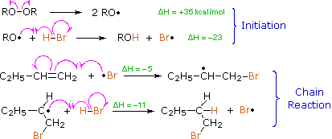
The weak O–O bond of a peroxide initiator is broken homolytically by thermal or hight energy. The resulting alkoxy radical then abstracts a hydrogen atom from HBr in a strongly exothermic reaction. Once a bromine atom is formed it adds to the π-bond of the alkene in the first step of a chain reaction. This addition is regioselective, giving the more stable carbon radical as an intermediate. The second step is carbon radical abstraction of another hydrogen from HBr, generating the anti-Markovnikov alkyl bromide and a new bromine atom. Each of the steps in this chain reaction is exothermic, so once started the process continues until radicals are lost to termination events. This free radical chain addition competes very favorably with the slower ionic addition of HBr described earlier, especially in non-polar solvents. It is important to note, however, that HBr is unique in this respect. The radical addition process is unfavorable for HCl and HI because one of the chain steps becomes endothermic (the second for HCl & the first for HI). Other radical addition reactions to alkenes have been observed, one example being the peroxide induced addition of carbon tetrachloride shown in the following equation
The best known and most important use of free radical addition to alkenes is probably polymerization. Since the addition of carbon radicals to double bonds is energetically favorable, concentrated solutions of alkenes are prone to radical-initiated polymerization, as illustrated for propene by the following equation. The blue colored R-group represents an initiating radical species or a growing polymer chain; the propene monomers are colored maroon. The addition always occurs so that the more stable radical intermediate is formed.
We noted earlier that benzylic and allylic sites are exceptionally reactive in free radical halogenation reactions. Since carbon-carbon double bonds add chlorine and bromine in liquid phase solutions, radical substitution reactions by these halogens are often carried out at elevated temperature in the gas phase (first equation below). Formation of the ionic π-complexes that are intermediates in halogen addition is unfavorable in the absence of polar solvents, and entropy generally favors substitution over addition. The brominating reagent, N-bromosuccinimide (NBS), has proven useful for achieving allylic or benzylic substitution in CCl4 solution at temperatures below its boiling point (77 ºC). One such application is shown in the second equation.
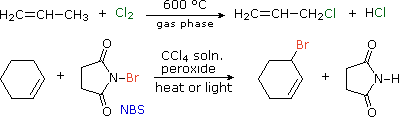
The predominance of allylic substitution over addition in the NBS reaction is interesting. The N–Br bond is undoubtedly weak (probably less than 50 kcal/mol) so bromine atom abstraction by radicals should be very favorable. The resulting succinimyl radical might then establish a chain reaction by removing an allylic hydrogen from the alkene. One problem with this mechanism is that NBS is very insoluble in CCl4, about 0.006 mole / liter at reflux. Although it is possible that the allylic bromination occurs at a solid-liquid interface, evidence for another pathway has been obtained. In the non-polar solvent used for these reactions, very low concentrations of bromine may be generated from NBS. This would serve as a source of bromine atoms, which would abstract allylic hydrogens irreversibly (an exothermic reaction) in competition with reversible addition to the double bond. The HBr produced in this way is known to react with NBS, giving a new bromine molecule and succinimide, as shown here. Ionic addition of bromine to the double bond would be very slow in these circumstances (CCl4 is a nonpolar solvent).
This mechanism is essentially the same as that for the free radical halogenation of alkanes, with NBS serving as a source of very low concentrations of bromine. Unsymmetrical allylic radicals will react to give two regioisomers. Thus, 1-octene on bromination with NBS yields a mixture of 3-bromo-1-octene (ca. 18%) and 1-bromo-2-octene (82%) - both cis and trans isomers.
When considering compounds having two or more double bonds in a molecule, it is useful to identify three distinct ways in which these functions may be oriented with respect to each other. First, the double bonds may be separated by one or more sp3-hybridized carbon atoms, as in 1,5-hexadiene. In this circumstance each double bond behaves independently of the other, and we refer to them as isolated. A second relationship has the double bonds connected to each other by a single bond, as in 1,3-hexadiene, and we refer to this arrangement as conjugated. Finally, two double bonds might share a carbon atom, as in 1,2-hexadiene. The central carbon atom in such a system is sp-hybridized, and we call such double bonds cumulated. These three isomers are shown in the following diagram, and three other similar isomers will be displayed on clicking the Change Examples button. In cases where stereoisomers are possible only the E-isomer is shown. Another stereoisomeric factor associated with conjugated dienes will be demonstrated by clicking the Change Examples button a second time. Rotation about the single bond joining the two double bonds (colored blue) converts a trans-like s-trans conformation to its s-cis form. The energy barrier to this conformational isomerization is normally low, and the s-trans conformer is often more stable than the s-cis conformer, as shown in the diagram.
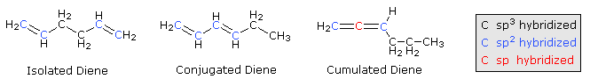
These categories are based on more than obvious structural variations. We find significant differences in the chemical properties of dienes depending on their structural type.
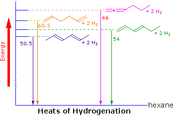
CH2=CH-CH=CH2 (+)CH2-CH=CH-CH2:(–)
A molecular orbital model for 1,3-butadiene is shown below. Note that the lobes of the four p-orbital components in each pi-orbital are colored differently and carry a plus or minus sign. This distinction refers to different phases, defined by the mathematical wave equations for such orbitals. Regions in which adjacent orbital lobes undergo a phase change are called nodes. Orbital electron density is zero in such regions. Thus a single p-orbital has a node at the nucleus, and all the pi-orbitals shown here have a nodal plane that is defined by the atoms of the diene. This is the only nodal surface in the lowest energy pi-orbital, π1. Higher energy pi-orbitals have an increasing number of nodes.
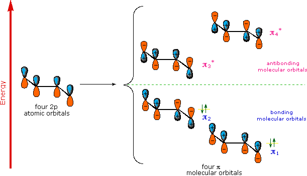
To examine a model of the p-orbital components for the s-cis conformer of a 1,3-diene.
To examine the molecular orbitals of both s-trans and s-cis-1,3-butadiene
Addition reactions of isolated dienes proceed more or less as expected from the behavior of simple alkenes. Thus, if one molar equivalent of 1,5-hexadiene is treated with one equivalent of bromine a mixture of 5,6-dibromo-1-hexene, 1,2,5,6-tetrabromohexane and unreacted diene is obtained, with the dibromo compound being the major product (about 50%).
Similar reactions of conjugated dienes, on the other hand, often give unexpected products. The addition of bromine to 1,3-butadiene is an example. As shown below, a roughly 50:50 mixture of 3,4-dibromo-1-butene (the expected product) and 1,4-dibromo-2-butene (chiefly the E-isomer) is obtained. The latter compound is remarkable in that the remaining double bond is found in a location where there was no double bond in the reactant. This interesting relocation requires an explanation.
The expected addition product from reactions of this kind is the result of 1,2-addition, i.e. bonding to the adjacent carbons of a double bond. The unexpected product comes from 1,4-addition, i.e. bonding at the terminal carbon atoms of a conjugated diene with a shift of the remaining double bond to the 2,3-location. These numbers refer to the four carbons of the conjugated diene and are not IUPAC nomenclature numbers. Product compositions are often temperature dependent, as the addition of HBr to 1,3-butadiene demonstrates.
Bonding of an electrophilic atom or group to one of the end carbon atoms of a conjugated diene (#1) generates an allyl cation intermediate. Such cations are stabilized by charge delocalization, and it is this delocalization that accounts for the 1,4-addition product produced in such addition reactions. As shown in the diagram, the positive charge is distributed over carbons #2 and #4 so it is at these sites that the nucleophilic component bonds. Note that resonance stabilization of the allyl cation is greater than comparable stabilization of 1,3-butadiene, because charge is delocalized in the former, but created and separated in the latter.
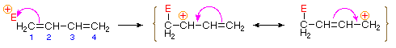
An explanation for the temperature influence is shown in the following energy diagram for the addition of HBr to 1,3-butadiene. The initial step in which a proton bonds to carbon #1 is the rate determining step, as indicated by the large activation energy (light gray arrow). The second faster step is the product determining step, and there are two reaction paths (colored blue for 1,2-addition and magenta for 1,4-addition). The 1,2-addition has a smaller activation energy than 1,4-addition, but the 1,4-product is more stable than the 1,2-product. At low temperatures, the products are formed irreversibly and reflect the relative rates of the two competing reactions. This is termed kinetic control. At higher temperatures, equilibrium is established between the products, and the thermodynamically favored 1,4-product dominates.
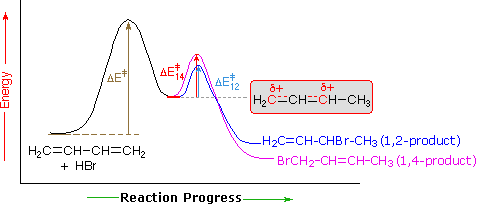
The unique character of conjugated dienes manifests itself dramatically in the Diels-Alder Cycloaddition Reaction. A cycloaddition reaction is the concerted bonding together of two independent pi-electron systems to form a new ring of atoms. When this occurs, two pi-bonds are converted to two sigma-bonds, the simplest example being the hypothetical combination of two ethene molecules to give cyclobutane. This does not occur under normal conditions, but the cycloaddition of 1,3-butadiene to cyanoethene (acrylonitrile) does, and this is an example of the Diels-Alder reaction. The following diagram illustrates two cycloadditions, and introduces several terms that are useful in discussing reactions of this kind.
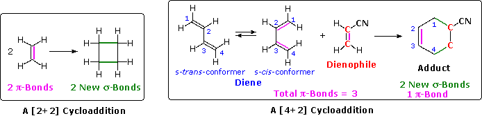
In the hypothetical ethylene dimerization on the left, each reactant molecule has a pi-bond (colored orange) occupied by two electrons. The cycloaddition converts these pi-bonds into new sigma-bonds (colored green), and this transformation is then designated a [2+2] cycloaddition, to enumerate the reactant pi-electrons that change their bonding location. The Diels-Alder reaction is an important and widely used method for making six-membered rings, as shown on the right. The reactants used in such reactions are a conjugated diene, simply referred to as the diene, and a double or triple bond coreactant called the dienophile, because it combines with (has an affinity for) the diene. The Diels-Alder cycloaddition is classified as a [4+2] process because the diene has four pi-electrons that shift position in the reaction and the dienophile has two. The Diels-Alder reaction is a single step process, so the diene component must adopt a cis-like conformation in order for the end carbon atoms (#1 & #4) to bond simultaneously to the dienophile. Such conformations are called s-cis, the s referring to the single bond connecting the two double bonds. The s-cis and s-trans conformers of 1,3-butadiene are shown in the preceding diagram. For many acyclic dienes the s-trans conformer is more stable than the s-cis conformer (due to steric crowding of the end groups), but the two are generally in rapid equilibrium, permitting the use of all but the most hindered dienes as reactants in Diels-Alder reactions. In its usual form, the diene component is electron rich, and the best dienophiles are electron poor due to electron withdrawing substituents such as CN, C=O & NO2. The initial bonding interaction reflects this electron imbalance, with the two new sigma-bonds being formed simultaneously, but not necessarily at equal rates.
We noted earlier that addition reactions of alkenes often exhibited stereoselectivity, in that the reagent elements in some cases added syn and in other cases anti to the the plane of the double bond. Both reactants in the Diels-Alder reaction may demonstrate stereoisomerism, and when they do it is found that the relative configurations of the reactants are preserved in the product (the adduct). The following drawing illustrates this fact for the reaction of 1,3-butadiene with (E)-dicyanoethene. The trans relationship of the cyano groups in the dienophile is preserved in the six-membered ring of the adduct. Likewise, if the terminal carbons of the diene bear substituents, their relative configuration will be retained in the adduct. Using the earlier terminology, we could say that bonding to both the diene and the dienophile is syn. An alternative description, however, refers to the planar nature of both reactants and terms the bonding in each case to be suprafacial (i.e. to or from the same face of each plane). This stereospecificity also confirms the synchronous nature of the 1,4-bonding that takes place.
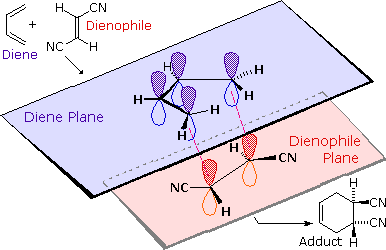
The essential characteristics of the Diels-Alder cycloaddition reaction may be summarized as follows:
(i) The reaction always creates a new six-membered ring. When intramolecular, another ring may also be formed. (ii) The diene component must be able to assume a s-cis conformation. (iii) Electron withdrawing groups on the dienophile facilitate reaction. (iv) Electron donating groups on the diene facilitate reaction. (v) Steric hindrance at the bonding sites may inhibit or prevent reaction. (vi) The reaction is stereospecific with respect to substituent configuration in both the dienophile and the diene.
These features are illustrated by the following eight examples, one of which does not give a Diels-Alder cycloaddition. Try to predict the course of each reaction before disclosing the answers by pressing the "Show Products" button. The formation of a new six-membered ring should be apparent in every case where reaction occurs.
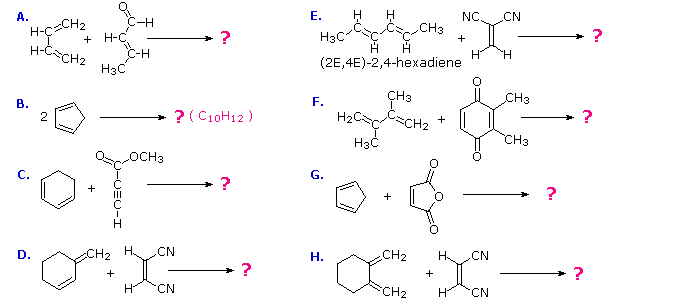
There is no reaction in example D because this diene cannot adopt a s-cis orientation. In examples B, C, F, G & H at least one of the reactants is cyclic so that the product has more than one ring, but the newly formed ring is always six-membered. In example B the the same cyclic compound acts as both the diene colored blue) and the dienophile (colored red). The adduct has three rings, two of which are the five-membered rings present in the reactant, and the third is the new six-membered ring (shaded light yellow). Example C has an alkyne as a dienophile (colored red), so the adduct retains a double bond at that location. This double bond could still serve as a dienophile, but in the present case the diene is sufficiently hindered to retard a second cycloaddition. The quinone dienophile in reaction F has two dienophilic double bonds. However, the double bond with two methyl substituents is less reactive than the unsubstituted dienophile due in part to the electron donating properties of the methyl groups and in part to steric hindrance. The stereospecificity of the Diels-Alder reaction is demonstrated by examples A, E & H. In A & H the stereogenic centers lie on the dienophile, whereas in E these centers are on the diene. In all cases the configuration of the reactant is preserved in the adduct.
Cyclic dienes, such as those in examples B, C & G, give bridged bicyclic adducts for which an additional configurational feature must be designated. As shown in the following diagram, there are two possible configurations for compounds of this kind. If a substituent (colored magenta here) is oriented cis to the longest or more unsaturated bridge (colored blue here), it is said to be endo. When directed trans to the bridge it is exo. When the Diels-Alder reaction forms bridged bicyclic adducts and an unsaturated substituent is located on this bicyclic structure (as in B & G), the chief product is normally the endo isomer "Alder's Endo Rule". Example C does not merit such a nomenclature, since stereoisomeric orientations of the substituent are not possible.
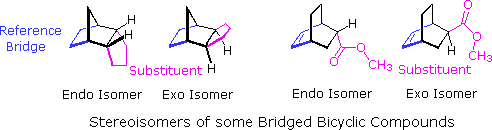
Additional information about the Diels-Alder reaction may be reached by clicking here.
Allenes The chemistry of cumulated dienes (allenes) is somewhat specialized and will not be described here. The interested reader may pursue this subject a bit further by clicking here.
The following problems concern reactions of dienes. The first question requires you to draw the products of 1,2- & 1,4-addition to some conjugated dienes. The second and third questions asks you to evaluate potential dienes and dienophile reactants in Diels-Alder reactions. For the fourth question you are asked to draw the products expected from some Diels-Alder reactions. The fifth question is similar, but asks you to draw the reactants that will give a specified Diels-Alder adduct. Finally, the sixth question provides a comprehensive test of Diels-Alder reactions.